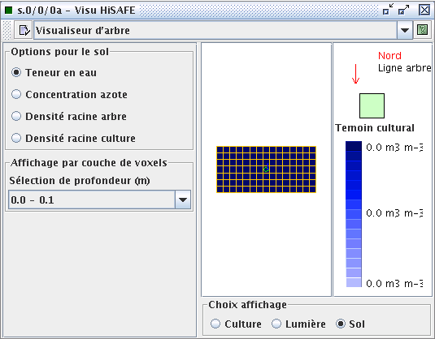
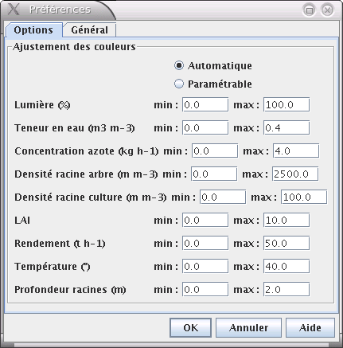

Visualiseur HiSafe |
Visualisez le peuplement spatialisé associé à une étape de projet sur une carte. Ce visualiseur est basé sur le Visualiseur Simple dont il reprend la plupart des fonctionalités. Il est utilisable avec le modèle HiSafe .
La scène étudiée est représentée de dessus : les cellules de sol forment une grille dans laquelle les arbres sont plantés. Il est possible de zoomer sur la scène et de procéder à des sélections comme dans le Visualiseur Simple. Par exemple, pour contrôler les propriétés d'une cellule de sol, choisissez « Inspecteur de cellules » et sélectionnez la cellule de votre choix.
Le choix d'affichage peut porter sur la culture, la lumière ou le sol. Les options de la barre latérale se synchronisent en fonction de ce choix. La légende se met à jour chaque fois que nécessaire. Il est possible de sélectionner le témoin cultural de la légende (par double clic) pour observer ses propriétés à tout moment et les comparer avec celles d'une cellule cultivée de la scène.

Le Visualiseur propose l'onglet de préférences du Visualiseur Simple et un onglet spécifique pour régler les options de couleurs utilisées pour représenter la scène.
